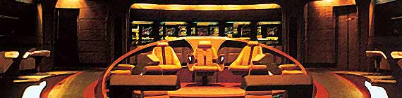

|


| Uma Breve Histria
de A Nova Gerao Depois da tentativa frustrada de reavivar a franquia de Jornada nas Estrelas para TV ao final da dcada de 70 com o projeto Fase 2, e com a perda de comando sobre os filmes da srie para o cinema, em 1986 Gene Roddenberry criou A Nova Gerao, que foi ao ar nos EUA a partir de setembro de 1987 em syndication, ou seja, sem ser exclusividade de uma rede de televiso especfica. Com muitos conceitos reciclados da Fase 2 e de "Jornada nas Estrelas: O Filme", Gene trouxe a bordo alguns integrantes do staff da Srie Clssica que eram de sua confiana, como Bob Justman e D.C. Fontana. Criou novos personagens como Picard, Data, La Forge, Bervely e Wesley Crusher, transformou o relacionamento que pretendia para Decker e Ilia na Fase 2 para Will Riker e Deanna Troi, transformou o Vulcano Xon (criado tambm para a segunda srie nunca produzida com o elenco original) em Data, colocou uma mulher, Tasha Yar, como responsvel pela segurana na nave e at trouxe um Klingon, outrora feroz inimigo da Federao, para a ponte da novssima USS Enterprise NCC 1701-D. Aps uma primeira temporada fraca e com o segundo ano atrapalhado por uma greve de roteiristas em Hollywood, a srie encontrou seu rumo a partir da terceira temporada, com novos escritores e deixando a velha guarda de lado. Clssicos como "Yesterday's Enterprise" e "The Best of Both Worlds" entraram no corao dos fs que deixaram de ver a srie como uma pfia tentativa de imitao da Srie Clssica original. Enquanto isso Gene deixava o comando da srie e Rick Berman assumiria o comando do rentvel franchise. A quarta temporada trouxe uma enxurrada de bons roteiros e firmou o francs Picard como um capito no mesmo nvel de James Kirk, porm com uma metodologia diferenciada. Os personagens do elenco principal estavam tendo uma histria de fundo, algo que no havia sido mostrado na srie antecessora da dcada de 60. Depois de um quinto ano de enorme sucesso e um sexto tambm muito apreciado, em 1994, em sua stima temporada e com 178 episdios produzidos, a saga da Nova Gerao acabou nas telinhas e saltou para as telas de cinema com "Jornada nas Estrelas: Generations" e mais trs filmes de cinema nos anos seguintes. Deixando de herana episdios inesquecveis, personagens recorrentes marcantes como Guinan, Reginald Barclay, Q, Gowron, Hugh e outros, a srie abriu as portas para os novos segmentos de Jornada nas Estrelas ganharem seu espao junto aos telespectadores. Como j havia dito Leonard Nimoy, que at interpretou Spock em um episdio da Nova Gerao, "eles (Gene e os produtores) conseguiram colocar um raio em uma garrafa... novamente". |

Elenco:
Patrick Stewart - Jean-Luc Picard
Jonathan Frakes - William T. Riker
Brent Spiner - Data
Michael Dorn - Worf
Marina Sirtis - Deanna Troi
Gates McFadden - Beverly Crusher
LeVar Burton - Geordi La Forge
Denise Crosby - Tasha Yar
Wil Wheaton - Wesley Crusher